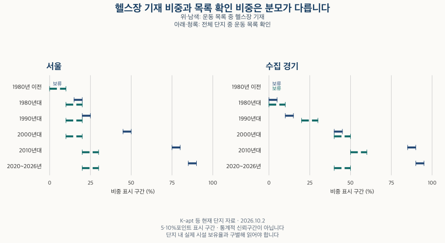

아파트의 진화 · 커뮤니티 시설
아파트 커뮤니티 시설, 신축·대단지에 더 많을까? K-apt 기재 비교
현재 K-apt 목록의 헬스장·수영장 기재 비중을 준공 연대·단지 규모별로 비교합니다. 목록 확인 범위와 실제 보유의 차이, 문고·독서실의 구분, 관심 단지에서 확인할 조건을 설명합니다.
분석 기간 · 현재 시설 목록 2026.10.2 · 준공 연대·규모별 비교 | 자료 기준일 · 공식 입력 안내 확인 2026-10-16
아파트를 고를 때 ‘신축이면 헬스장이 있고, 대단지면 수영장도 있지 않을까?’라는 기대를 하게 됩니다. 서울·수집 경기의 현재 K-apt 시설 목록을 준공 연대와 단지 규모로 나눠 비교했습니다. 이 자료가 알려 주는 것은 시설을 적어 낸 목록의 차이이며, 실제 이용할 수 있는 시설은 관심 단지에서 따로 확인해야 합니다.
시설 목록은 실제 단지 내 보유를 뜻하나요?
그렇게 단정할 수 없습니다. K-apt 공식 기초자료 매뉴얼은 시설 정보를 단지 내 또는 주변 시설을 포함하는 선택 목록으로 안내합니다. 등록 단위가 실제 이용 범위와 같다고 보장하지도 않습니다. 따라서 이 글은 ‘보유율’ 대신 목록에 해당 시설을 적은 단지의 비중을 비교합니다.
헬스장·수영장은 주민운동시설 목록에서, 문고·보육시설 등은 부대복리시설 목록에서 읽었습니다. 두 목록의 확인 범위는 다릅니다. 각 시설의 기재 비중은 해당 목록에 내용이 있고 유형을 구별할 수 있는 단지를 분모로 삼습니다. 목록 자체가 비어 있거나 연결할 수 없는 단지를 ‘시설 없음’으로 넣지 않았습니다.
내용이 있는 목록에도 일부 시설만 적혔을 수 있습니다. 헬스장이 목록에 없다는 사실은 ‘그 목록에 헬스장이 적혀 있지 않다’는 뜻이며, 현장에 없음을 확인한 결과가 아닙니다. 본문의 ‘목록 확인 단지’는 이 비교에 들어온 범위를 보여 줍니다.
헬스장·수영장은 최근 준공 연대에 더 많이 적혀 있나요?
헬스장은 목록을 확인한 집합에서 최근 연대의 기재 비중이 높습니다. 서울은 2000년대 45~50%에서 2010년대 75~80%, 2020~2026년 85~90% 구간입니다. 수집 경기는 각각 40~45%, 85~90%, 90~95% 구간입니다. 같은 시설을 같은 방식으로 읽어도 목록 확인 범위가 달라 함께 비교해야 합니다.

| 지역 | 준공 연대 | 헬스장 기재 | 수영장 기재 | 문고 기재 | 운동 목록 확인 단지 | 부대복리 목록 확인 단지 |
|---|---|---|---|---|---|---|
| 서울 | 전체 | 50–55% | 0–5% | 15–20% | 10–20% | 20–30% |
| 서울 | 1980년 이전 | 보류 | 0–5% | 0–5% | 0–10% | 10–20% |
| 서울 | 1980년대 | 15–20% | 보류 | 보류 | 10–20% | 40–50% |
| 서울 | 1990년대 | 20–25% | 보류 | 0–5% | 10–20% | 30–40% |
| 서울 | 2000년대 | 45–50% | 0–5% | 10–15% | 10–20% | 10–20% |
| 서울 | 2010년대 | 75–80% | 5–10% | 50–55% | 20–30% | 30–40% |
| 서울 | 2020~2026년 | 85–90% | 5–10% | 50–55% | 20–30% | 30–40% |
| 서울 | 연도 미상 | 보류 | 보류 | 보류 | 보류 | 보류 |
| 서울 | 미래 연도 | 보류 | 보류 | 보류 | 보류 | 보류 |
| 수집 경기 | 전체 | 55–60% | 0–5% | 30–35% | 30–40% | 50–60% |
| 수집 경기 | 1980년 이전 | 보류 | 보류 | 보류 | 보류 | 보류 |
| 수집 경기 | 1980년대 | 0–5% | 0–5% | 보류 | 0–10% | 10–20% |
| 수집 경기 | 1990년대 | 10–15% | 보류 | 0–5% | 20–30% | 50–60% |
| 수집 경기 | 2000년대 | 40–45% | 0–5% | 20–25% | 40–50% | 50–60% |
| 수집 경기 | 2010년대 | 85–90% | 0–5% | 60–65% | 50–60% | 60–70% |
| 수집 경기 | 2020~2026년 | 90–95% | 5–10% | 60–65% | 40–50% | 50–60% |
| 수집 경기 | 연도 미상 | 보류 | 보류 | 보류 | 보류 | 보류 |
| 수집 경기 | 미래 연도 | 보류 | 보류 | 보류 | 보류 | 보류 |
수영장의 양상은 다릅니다. 2020~2026년 준공 집합에서는 두 지역 모두 5~10% 구간입니다. 2010년대는 서울 5~10%, 수집 경기 0~5% 구간입니다. 같은 ‘커뮤니티 시설’이라도 헬스장과 수영장을 묶어 하나의 보급 수준으로 읽기 어렵습니다. 0~5%는 시설이 없다는 뜻이 아니며, ‘보류’도 0%가 아닙니다.
가장 설득력 있는 반론은 최근 단지가 시설을 더 충실하게 적었을 수 있다는 것입니다. 주변·공동 이용 시설을 적는 방식이나 실제 시설 중 어떤 것을 선택했는지도 다를 수 있습니다. 목록이 없는 집합의 실제 상태를 확인하지 못했으므로, 조건부 기재 비중의 차이가 전체 단지의 실제 보유 차이와 같다고 할 수 없습니다.
현재 목록을 과거 준공 연도로 나눈 결과라는 점도 중요합니다. 구축 단지에 나중에 설치한 시설이 들어 있을 수 있고, 이미 철거된 단지는 현재 목록에 남지 않을 수 있습니다. 이 표로 ‘몇 년부터 신축의 표준이 됐다’거나 ‘준공할 때부터 갖췄다’고 판단하지 않습니다.
대단지라면 커뮤니티 시설 기재 비중도 항상 높나요?
서울 헬스장 기재에서는 단순한 대단지 우위가 나타나지 않습니다. 운동시설 목록을 확인한 집합의 300세대 미만과 1,000세대 이상은 모두 50~55% 구간입니다. 수집 경기는 각각 50~55%, 65~70% 구간입니다. 같은 규모 기준이라도 지역별 결과가 다릅니다.
| 지역 | 규모 | 헬스장 기재 | 수영장 기재 | 문고 기재 | 운동 목록 확인 단지 | 부대복리 목록 확인 단지 |
|---|---|---|---|---|---|---|
| 서울 | 전체 | 50–55% | 0–5% | 15–20% | 10–20% | 20–30% |
| 서울 | 300세대 미만 | 50–55% | 0–5% | 0–5% | 0–10% | 10–20% |
| 서울 | 300~499세대 | 55–60% | 보류 | 15–20% | 40–50% | 90–100% |
| 서울 | 500~999세대 | 45–50% | 보류 | 30–35% | 70–80% | 80–90% |
| 서울 | 1,000세대 이상 | 50–55% | 5–10% | 35–40% | 80–90% | 80–90% |
| 서울 | 세대수 미상 | 보류 | 보류 | 보류 | 보류 | 보류 |
| 수집 경기 | 전체 | 55–60% | 0–5% | 30–35% | 30–40% | 50–60% |
| 수집 경기 | 300세대 미만 | 50–55% | 보류 | 5–10% | 10–20% | 20–30% |
| 수집 경기 | 300~499세대 | 50–55% | 보류 | 20–25% | 60–70% | 90–100% |
| 수집 경기 | 500~999세대 | 55–60% | 0–5% | 45–50% | 80–90% | 90–100% |
| 수집 경기 | 1,000세대 이상 | 65–70% | 5–10% | 50–55% | 80–90% | 90–100% |
| 수집 경기 | 세대수 미상 | 보류 | 보류 | 보류 | 보류 | 보류 |
서울에서 운동시설 목록을 확인한 단지의 비중은 300세대 미만 0~10%, 1,000세대 이상 80~90% 구간입니다. 기재 비중이 같게 표시돼도 작은 단지 쪽은 훨씬 적은 범위의 목록으로 비교한 셈입니다. 이 차이를 빼고 ‘소단지나 대단지나 시설이 같다’고 결론 내릴 수 없습니다.
수영장은 1,000세대 이상에서 두 지역 모두 5~10% 구간입니다. 다른 규모의 보류값과 비교해 보유의 우열을 정하지 않습니다. 세대수가 커지면 시설이 늘어난다는 인과효과를 계산한 것도 아닙니다. 준공 연대·지역·등록 대상의 구성이 함께 달라집니다.
연대와 규모를 함께 나눈 비교 펼치기
같은 연대 안의 규모 차이와 자료 조건을 확인할 수 있습니다. 비어 있는 조합과 보류값을 그대로 남겼습니다. 조건을 세분하면 비교 가능한 목록이 줄어들므로 결과가 보이는 일부 조합만 골라 전체 경향으로 해석하지 않습니다.
서울 · 기본 집계 · 연대·규모 함께 비교
| 준공 연대 | 규모 | 헬스장 기재 | 수영장 기재 | 문고 기재 | 운동 목록 확인 단지 | 부대복리 목록 확인 단지 |
|---|---|---|---|---|---|---|
| 전체 | 전체 | 50–55% | 0–5% | 15–20% | 10–20% | 20–30% |
| 전체 | 300세대 미만 | 50–55% | 0–5% | 0–5% | 0–10% | 10–20% |
| 전체 | 300~499세대 | 55–60% | 보류 | 15–20% | 40–50% | 90–100% |
| 전체 | 500~999세대 | 45–50% | 보류 | 30–35% | 70–80% | 80–90% |
| 전체 | 1,000세대 이상 | 50–55% | 5–10% | 35–40% | 80–90% | 80–90% |
| 전체 | 세대수 미상 | 보류 | 보류 | 보류 | 보류 | 보류 |
| 1980년 이전 | 전체 | 보류 | 0–5% | 0–5% | 0–10% | 10–20% |
| 1980년 이전 | 300세대 미만 | 보류 | 보류 | 0–5% | 보류 | 10–20% |
| 1980년 이전 | 300~499세대 | 보류 | 보류 | 보류 | 보류 | 보류 |
| 1980년 이전 | 500~999세대 | 보류 | 보류 | 보류 | 보류 | 보류 |
| 1980년 이전 | 1,000세대 이상 | 보류 | 보류 | 보류 | 보류 | 보류 |
| 1980년 이전 | 세대수 미상 | 보류 | 보류 | 보류 | 보류 | 보류 |
| 1980년대 | 전체 | 15–20% | 보류 | 보류 | 10–20% | 40–50% |
| 1980년대 | 300세대 미만 | 보류 | 보류 | 보류 | 0–10% | 40–50% |
| 1980년대 | 300~499세대 | 보류 | 0–5% | 0–5% | 10–20% | 90–100% |
| 1980년대 | 500~999세대 | 보류 | 0–5% | 보류 | 40–50% | 80–90% |
| 1980년대 | 1,000세대 이상 | 25–30% | 0–5% | 보류 | 80–90% | 80–90% |
| 1980년대 | 세대수 미상 | 보류 | 보류 | 보류 | 보류 | 보류 |
| 1990년대 | 전체 | 20–25% | 보류 | 0–5% | 10–20% | 30–40% |
| 1990년대 | 300세대 미만 | 25–30% | 보류 | 보류 | 0–10% | 20–30% |
| 1990년대 | 300~499세대 | 30–35% | 보류 | 보류 | 20–30% | 90–100% |
| 1990년대 | 500~999세대 | 20–25% | 0–5% | 보류 | 60–70% | 90–100% |
| 1990년대 | 1,000세대 이상 | 보류 | 보류 | 0–5% | 60–70% | 70–80% |
| 1990년대 | 세대수 미상 | 보류 | 보류 | 보류 | 보류 | 보류 |
| 2000년대 | 전체 | 45–50% | 0–5% | 10–15% | 10–20% | 10–20% |
| 2000년대 | 300세대 미만 | 50–55% | 보류 | 0–5% | 0–10% | 10–20% |
| 2000년대 | 300~499세대 | 45–50% | 보류 | 5–10% | 60–70% | 90–100% |
| 2000년대 | 500~999세대 | 35–40% | 보류 | 25–30% | 90–100% | 90–100% |
| 2000년대 | 1,000세대 이상 | 50–55% | 보류 | 40–45% | 80–90% | 80–90% |
| 2000년대 | 세대수 미상 | 보류 | 보류 | 보류 | 보류 | 보류 |
| 2010년대 | 전체 | 75–80% | 5–10% | 50–55% | 20–30% | 30–40% |
| 2010년대 | 300세대 미만 | 70–75% | 보류 | 15–20% | 0–10% | 10–20% |
| 2010년대 | 300~499세대 | 75–80% | 보류 | 70–75% | 80–90% | 90–100% |
| 2010년대 | 500~999세대 | 80–85% | 보류 | 75–80% | 80–90% | 90–100% |
| 2010년대 | 1,000세대 이상 | 80–85% | 15–20% | 75–80% | 90–100% | 90–100% |
| 2010년대 | 세대수 미상 | 보류 | 보류 | 보류 | 보류 | 보류 |
| 2020~2026년 | 전체 | 85–90% | 5–10% | 50–55% | 20–30% | 30–40% |
| 2020~2026년 | 300세대 미만 | 보류 | 0–5% | 보류 | 10–20% | 10–20% |
| 2020~2026년 | 300~499세대 | 보류 | 0–5% | 55–60% | 60–70% | 70–80% |
| 2020~2026년 | 500~999세대 | 보류 | 보류 | 65–70% | 70–80% | 70–80% |
| 2020~2026년 | 1,000세대 이상 | 보류 | 보류 | 70–75% | 80–90% | 80–90% |
| 2020~2026년 | 세대수 미상 | 보류 | 보류 | 보류 | 보류 | 보류 |
| 연도 미상 | 전체 | 보류 | 보류 | 보류 | 보류 | 보류 |
| 연도 미상 | 300세대 미만 | 보류 | 보류 | 보류 | 보류 | 보류 |
| 연도 미상 | 300~499세대 | 보류 | 보류 | 보류 | 보류 | 보류 |
| 연도 미상 | 500~999세대 | 보류 | 보류 | 보류 | 보류 | 보류 |
| 연도 미상 | 1,000세대 이상 | 보류 | 보류 | 보류 | 보류 | 보류 |
| 연도 미상 | 세대수 미상 | 보류 | 보류 | 보류 | 보류 | 보류 |
| 미래 연도 | 전체 | 보류 | 보류 | 보류 | 보류 | 보류 |
| 미래 연도 | 300세대 미만 | 보류 | 보류 | 보류 | 보류 | 보류 |
| 미래 연도 | 300~499세대 | 보류 | 보류 | 보류 | 보류 | 보류 |
| 미래 연도 | 500~999세대 | 보류 | 보류 | 보류 | 보류 | 보류 |
| 미래 연도 | 1,000세대 이상 | 보류 | 보류 | 보류 | 보류 | 보류 |
| 미래 연도 | 세대수 미상 | 보류 | 보류 | 보류 | 보류 | 보류 |
수집 경기 · 기본 집계 · 연대·규모 함께 비교
| 준공 연대 | 규모 | 헬스장 기재 | 수영장 기재 | 문고 기재 | 운동 목록 확인 단지 | 부대복리 목록 확인 단지 |
|---|---|---|---|---|---|---|
| 전체 | 전체 | 55–60% | 0–5% | 30–35% | 30–40% | 50–60% |
| 전체 | 300세대 미만 | 50–55% | 보류 | 5–10% | 10–20% | 20–30% |
| 전체 | 300~499세대 | 50–55% | 보류 | 20–25% | 60–70% | 90–100% |
| 전체 | 500~999세대 | 55–60% | 0–5% | 45–50% | 80–90% | 90–100% |
| 전체 | 1,000세대 이상 | 65–70% | 5–10% | 50–55% | 80–90% | 90–100% |
| 전체 | 세대수 미상 | 보류 | 보류 | 보류 | 보류 | 보류 |
| 1980년 이전 | 전체 | 보류 | 보류 | 보류 | 보류 | 보류 |
| 1980년 이전 | 300세대 미만 | 보류 | 보류 | 보류 | 보류 | 보류 |
| 1980년 이전 | 300~499세대 | 보류 | 보류 | 보류 | 보류 | 보류 |
| 1980년 이전 | 500~999세대 | 보류 | 보류 | 보류 | 보류 | 보류 |
| 1980년 이전 | 1,000세대 이상 | 보류 | 보류 | 보류 | 보류 | 보류 |
| 1980년 이전 | 세대수 미상 | 보류 | 보류 | 보류 | 보류 | 보류 |
| 1980년대 | 전체 | 0–5% | 0–5% | 보류 | 0–10% | 10–20% |
| 1980년대 | 300세대 미만 | 보류 | 보류 | 0–5% | 보류 | 0–10% |
| 1980년대 | 300~499세대 | 보류 | 보류 | 0–5% | 보류 | 70–80% |
| 1980년대 | 500~999세대 | 보류 | 보류 | 보류 | 보류 | 90–100% |
| 1980년대 | 1,000세대 이상 | 0–5% | 0–5% | 0–5% | 70–80% | 80–90% |
| 1980년대 | 세대수 미상 | 보류 | 보류 | 보류 | 보류 | 보류 |
| 1990년대 | 전체 | 10–15% | 보류 | 0–5% | 20–30% | 50–60% |
| 1990년대 | 300세대 미만 | 20–25% | 보류 | 보류 | 0–10% | 30–40% |
| 1990년대 | 300~499세대 | 15–20% | 보류 | 보류 | 30–40% | 90–100% |
| 1990년대 | 500~999세대 | 10–15% | 0–5% | 5–10% | 70–80% | 90–100% |
| 1990년대 | 1,000세대 이상 | 20–25% | 0–5% | 5–10% | 70–80% | 80–90% |
| 1990년대 | 세대수 미상 | 보류 | 보류 | 보류 | 보류 | 보류 |
| 2000년대 | 전체 | 40–45% | 0–5% | 20–25% | 40–50% | 50–60% |
| 2000년대 | 300세대 미만 | 35–40% | 보류 | 5–10% | 10–20% | 20–30% |
| 2000년대 | 300~499세대 | 35–40% | 보류 | 10–15% | 60–70% | 90–100% |
| 2000년대 | 500~999세대 | 45–50% | 보류 | 35–40% | 90–100% | 90–100% |
| 2000년대 | 1,000세대 이상 | 60–65% | 보류 | 35–40% | 90–100% | 90–100% |
| 2000년대 | 세대수 미상 | 보류 | 보류 | 보류 | 보류 | 보류 |
| 2010년대 | 전체 | 85–90% | 0–5% | 60–65% | 50–60% | 60–70% |
| 2010년대 | 300세대 미만 | 75–80% | 0–5% | 10–15% | 10–20% | 20–30% |
| 2010년대 | 300~499세대 | 80–85% | 보류 | 70–75% | 80–90% | 90–100% |
| 2010년대 | 500~999세대 | 85–90% | 보류 | 75–80% | 90–100% | 90–100% |
| 2010년대 | 1,000세대 이상 | 85–90% | 5–10% | 75–80% | 90–100% | 90–100% |
| 2010년대 | 세대수 미상 | 보류 | 보류 | 보류 | 보류 | 보류 |
| 2020~2026년 | 전체 | 90–95% | 5–10% | 60–65% | 40–50% | 50–60% |
| 2020~2026년 | 300세대 미만 | 보류 | 0–5% | 15–20% | 10–20% | 20–30% |
| 2020~2026년 | 300~499세대 | 보류 | 0–5% | 60–65% | 70–80% | 80–90% |
| 2020~2026년 | 500~999세대 | 보류 | 보류 | 75–80% | 80–90% | 80–90% |
| 2020~2026년 | 1,000세대 이상 | 보류 | 10–15% | 70–75% | 80–90% | 80–90% |
| 2020~2026년 | 세대수 미상 | 보류 | 보류 | 보류 | 보류 | 보류 |
| 연도 미상 | 전체 | 보류 | 보류 | 보류 | 보류 | 보류 |
| 연도 미상 | 300세대 미만 | 보류 | 보류 | 보류 | 보류 | 보류 |
| 연도 미상 | 300~499세대 | 보류 | 보류 | 보류 | 보류 | 보류 |
| 연도 미상 | 500~999세대 | 보류 | 보류 | 보류 | 보류 | 보류 |
| 연도 미상 | 1,000세대 이상 | 보류 | 보류 | 보류 | 보류 | 보류 |
| 연도 미상 | 세대수 미상 | 보류 | 보류 | 보류 | 보류 | 보류 |
| 미래 연도 | 전체 | 보류 | 보류 | 보류 | 보류 | 보류 |
| 미래 연도 | 300세대 미만 | 보류 | 보류 | 보류 | 보류 | 보류 |
| 미래 연도 | 300~499세대 | 보류 | 보류 | 보류 | 보류 | 보류 |
| 미래 연도 | 500~999세대 | 보류 | 보류 | 보류 | 보류 | 보류 |
| 미래 연도 | 1,000세대 이상 | 보류 | 보류 | 보류 | 보류 | 보류 |
| 미래 연도 | 세대수 미상 | 보류 | 보류 | 보류 | 보류 | 보류 |
서울 · 최신 파일만 · 연대·규모 함께 비교
| 준공 연대 | 규모 | 헬스장 기재 | 수영장 기재 | 문고 기재 | 운동 목록 확인 단지 | 부대복리 목록 확인 단지 |
|---|---|---|---|---|---|---|
| 전체 | 전체 | 50–55% | 0–5% | 15–20% | 50–60% | 80–90% |
| 전체 | 300세대 미만 | 50–55% | 0–5% | 0–5% | 30–40% | 80–90% |
| 전체 | 300~499세대 | 55–60% | 보류 | 15–20% | 50–60% | 90–100% |
| 전체 | 500~999세대 | 45–50% | 보류 | 30–35% | 80–90% | 90–100% |
| 전체 | 1,000세대 이상 | 50–55% | 5–10% | 35–40% | 80–90% | 90–100% |
| 전체 | 세대수 미상 | 보류 | 보류 | 보류 | 보류 | 보류 |
| 1980년 이전 | 전체 | 보류 | 0–5% | 0–5% | 20–30% | 90–100% |
| 1980년 이전 | 300세대 미만 | 보류 | 보류 | 0–5% | 보류 | 80–90% |
| 1980년 이전 | 300~499세대 | 보류 | 보류 | 보류 | 보류 | 보류 |
| 1980년 이전 | 500~999세대 | 보류 | 보류 | 보류 | 보류 | 보류 |
| 1980년 이전 | 1,000세대 이상 | 보류 | 보류 | 보류 | 보류 | 보류 |
| 1980년 이전 | 세대수 미상 | 보류 | 보류 | 보류 | 보류 | 보류 |
| 1980년대 | 전체 | 15–20% | 보류 | 보류 | 30–40% | 90–100% |
| 1980년대 | 300세대 미만 | 보류 | 보류 | 보류 | 10–20% | 80–90% |
| 1980년대 | 300~499세대 | 보류 | 0–5% | 0–5% | 10–20% | 90–100% |
| 1980년대 | 500~999세대 | 보류 | 0–5% | 보류 | 40–50% | 90–100% |
| 1980년대 | 1,000세대 이상 | 25–30% | 0–5% | 보류 | 80–90% | 90–100% |
| 1980년대 | 세대수 미상 | 보류 | 보류 | 보류 | 보류 | 보류 |
| 1990년대 | 전체 | 20–25% | 보류 | 0–5% | 30–40% | 90–100% |
| 1990년대 | 300세대 미만 | 25–30% | 보류 | 보류 | 10–20% | 80–90% |
| 1990년대 | 300~499세대 | 30–35% | 보류 | 보류 | 20–30% | 90–100% |
| 1990년대 | 500~999세대 | 20–25% | 0–5% | 보류 | 70–80% | 90–100% |
| 1990년대 | 1,000세대 이상 | 보류 | 보류 | 0–5% | 80–90% | 90–100% |
| 1990년대 | 세대수 미상 | 보류 | 보류 | 보류 | 보류 | 보류 |
| 2000년대 | 전체 | 45–50% | 0–5% | 10–15% | 50–60% | 80–90% |
| 2000년대 | 300세대 미만 | 50–55% | 보류 | 0–5% | 30–40% | 80–90% |
| 2000년대 | 300~499세대 | 45–50% | 보류 | 5–10% | 60–70% | 90–100% |
| 2000년대 | 500~999세대 | 35–40% | 보류 | 25–30% | 90–100% | 90–100% |
| 2000년대 | 1,000세대 이상 | 50–55% | 보류 | 40–45% | 90–100% | 90–100% |
| 2000년대 | 세대수 미상 | 보류 | 보류 | 보류 | 보류 | 보류 |
| 2010년대 | 전체 | 75–80% | 5–10% | 50–55% | 70–80% | 80–90% |
| 2010년대 | 300세대 미만 | 70–75% | 보류 | 15–20% | 40–50% | 80–90% |
| 2010년대 | 300~499세대 | 75–80% | 보류 | 70–75% | 80–90% | 90–100% |
| 2010년대 | 500~999세대 | 80–85% | 보류 | 75–80% | 90–100% | 90–100% |
| 2010년대 | 1,000세대 이상 | 80–85% | 15–20% | 75–80% | 90–100% | 90–100% |
| 2010년대 | 세대수 미상 | 보류 | 보류 | 보류 | 보류 | 보류 |
| 2020~2026년 | 전체 | 85–90% | 5–10% | 50–55% | 70–80% | 80–90% |
| 2020~2026년 | 300세대 미만 | 보류 | 0–5% | 보류 | 50–60% | 70–80% |
| 2020~2026년 | 300~499세대 | 보류 | 0–5% | 55–60% | 70–80% | 80–90% |
| 2020~2026년 | 500~999세대 | 보류 | 보류 | 65–70% | 80–90% | 80–90% |
| 2020~2026년 | 1,000세대 이상 | 보류 | 보류 | 70–75% | 80–90% | 80–90% |
| 2020~2026년 | 세대수 미상 | 보류 | 보류 | 보류 | 보류 | 보류 |
| 연도 미상 | 전체 | 보류 | 보류 | 보류 | 보류 | 보류 |
| 연도 미상 | 300세대 미만 | 보류 | 보류 | 보류 | 보류 | 보류 |
| 연도 미상 | 300~499세대 | 보류 | 보류 | 보류 | 보류 | 보류 |
| 연도 미상 | 500~999세대 | 보류 | 보류 | 보류 | 보류 | 보류 |
| 연도 미상 | 1,000세대 이상 | 보류 | 보류 | 보류 | 보류 | 보류 |
| 연도 미상 | 세대수 미상 | 보류 | 보류 | 보류 | 보류 | 보류 |
| 미래 연도 | 전체 | 보류 | 보류 | 보류 | 보류 | 보류 |
| 미래 연도 | 300세대 미만 | 보류 | 보류 | 보류 | 보류 | 보류 |
| 미래 연도 | 300~499세대 | 보류 | 보류 | 보류 | 보류 | 보류 |
| 미래 연도 | 500~999세대 | 보류 | 보류 | 보류 | 보류 | 보류 |
| 미래 연도 | 1,000세대 이상 | 보류 | 보류 | 보류 | 보류 | 보류 |
| 미래 연도 | 세대수 미상 | 보류 | 보류 | 보류 | 보류 | 보류 |
수집 경기 · 최신 파일만 · 연대·규모 함께 비교
| 준공 연대 | 규모 | 헬스장 기재 | 수영장 기재 | 문고 기재 | 운동 목록 확인 단지 | 부대복리 목록 확인 단지 |
|---|---|---|---|---|---|---|
| 전체 | 전체 | 55–60% | 0–5% | 30–35% | 60–70% | 90–100% |
| 전체 | 300세대 미만 | 50–55% | 보류 | 5–10% | 30–40% | 80–90% |
| 전체 | 300~499세대 | 50–55% | 보류 | 20–25% | 60–70% | 90–100% |
| 전체 | 500~999세대 | 55–60% | 0–5% | 45–50% | 80–90% | 90–100% |
| 전체 | 1,000세대 이상 | 65–70% | 5–10% | 50–55% | 90–100% | 90–100% |
| 전체 | 세대수 미상 | 보류 | 보류 | 보류 | 보류 | 보류 |
| 1980년 이전 | 전체 | 보류 | 보류 | 보류 | 보류 | 보류 |
| 1980년 이전 | 300세대 미만 | 보류 | 보류 | 보류 | 보류 | 보류 |
| 1980년 이전 | 300~499세대 | 보류 | 보류 | 보류 | 보류 | 보류 |
| 1980년 이전 | 500~999세대 | 보류 | 보류 | 보류 | 보류 | 보류 |
| 1980년 이전 | 1,000세대 이상 | 보류 | 보류 | 보류 | 보류 | 보류 |
| 1980년 이전 | 세대수 미상 | 보류 | 보류 | 보류 | 보류 | 보류 |
| 1980년대 | 전체 | 0–5% | 0–5% | 보류 | 20–30% | 70–80% |
| 1980년대 | 300세대 미만 | 보류 | 보류 | 0–5% | 보류 | 50–60% |
| 1980년대 | 300~499세대 | 보류 | 보류 | 0–5% | 보류 | 80–90% |
| 1980년대 | 500~999세대 | 보류 | 보류 | 보류 | 보류 | 90–100% |
| 1980년대 | 1,000세대 이상 | 0–5% | 0–5% | 0–5% | 70–80% | 80–90% |
| 1980년대 | 세대수 미상 | 보류 | 보류 | 보류 | 보류 | 보류 |
| 1990년대 | 전체 | 10–15% | 보류 | 0–5% | 50–60% | 90–100% |
| 1990년대 | 300세대 미만 | 20–25% | 보류 | 보류 | 10–20% | 80–90% |
| 1990년대 | 300~499세대 | 15–20% | 보류 | 보류 | 30–40% | 90–100% |
| 1990년대 | 500~999세대 | 10–15% | 0–5% | 5–10% | 80–90% | 90–100% |
| 1990년대 | 1,000세대 이상 | 20–25% | 0–5% | 5–10% | 80–90% | 90–100% |
| 1990년대 | 세대수 미상 | 보류 | 보류 | 보류 | 보류 | 보류 |
| 2000년대 | 전체 | 40–45% | 0–5% | 20–25% | 70–80% | 90–100% |
| 2000년대 | 300세대 미만 | 35–40% | 보류 | 5–10% | 40–50% | 80–90% |
| 2000년대 | 300~499세대 | 35–40% | 보류 | 10–15% | 70–80% | 90–100% |
| 2000년대 | 500~999세대 | 45–50% | 보류 | 35–40% | 90–100% | 90–100% |
| 2000년대 | 1,000세대 이상 | 60–65% | 보류 | 35–40% | 90–100% | 90–100% |
| 2000년대 | 세대수 미상 | 보류 | 보류 | 보류 | 보류 | 보류 |
| 2010년대 | 전체 | 85–90% | 0–5% | 60–65% | 80–90% | 90–100% |
| 2010년대 | 300세대 미만 | 75–80% | 0–5% | 10–15% | 40–50% | 90–100% |
| 2010년대 | 300~499세대 | 80–85% | 보류 | 70–75% | 90–100% | 90–100% |
| 2010년대 | 500~999세대 | 85–90% | 보류 | 75–80% | 90–100% | 90–100% |
| 2010년대 | 1,000세대 이상 | 85–90% | 5–10% | 75–80% | 90–100% | 90–100% |
| 2010년대 | 세대수 미상 | 보류 | 보류 | 보류 | 보류 | 보류 |
| 2020~2026년 | 전체 | 90–95% | 5–10% | 60–65% | 70–80% | 80–90% |
| 2020~2026년 | 300세대 미만 | 보류 | 0–5% | 15–20% | 30–40% | 70–80% |
| 2020~2026년 | 300~499세대 | 보류 | 0–5% | 60–65% | 70–80% | 80–90% |
| 2020~2026년 | 500~999세대 | 보류 | 보류 | 75–80% | 80–90% | 80–90% |
| 2020~2026년 | 1,000세대 이상 | 보류 | 10–15% | 70–75% | 90–100% | 90–100% |
| 2020~2026년 | 세대수 미상 | 보류 | 보류 | 보류 | 보류 | 보류 |
| 연도 미상 | 전체 | 보류 | 보류 | 보류 | 보류 | 보류 |
| 연도 미상 | 300세대 미만 | 보류 | 보류 | 보류 | 보류 | 보류 |
| 연도 미상 | 300~499세대 | 보류 | 보류 | 보류 | 보류 | 보류 |
| 연도 미상 | 500~999세대 | 보류 | 보류 | 보류 | 보류 | 보류 |
| 연도 미상 | 1,000세대 이상 | 보류 | 보류 | 보류 | 보류 | 보류 |
| 연도 미상 | 세대수 미상 | 보류 | 보류 | 보류 | 보류 | 보류 |
| 미래 연도 | 전체 | 보류 | 보류 | 보류 | 보류 | 보류 |
| 미래 연도 | 300세대 미만 | 보류 | 보류 | 보류 | 보류 | 보류 |
| 미래 연도 | 300~499세대 | 보류 | 보류 | 보류 | 보류 | 보류 |
| 미래 연도 | 500~999세대 | 보류 | 보류 | 보류 | 보류 | 보류 |
| 미래 연도 | 1,000세대 이상 | 보류 | 보류 | 보류 | 보류 | 보류 |
| 미래 연도 | 세대수 미상 | 보류 | 보류 | 보류 | 보류 | 보류 |
서울 · 아파트만 · 연대·규모 함께 비교
| 준공 연대 | 규모 | 헬스장 기재 | 수영장 기재 | 문고 기재 | 운동 목록 확인 단지 | 부대복리 목록 확인 단지 |
|---|---|---|---|---|---|---|
| 전체 | 전체 | 45–50% | 0–5% | 15–20% | 50–60% | 90–100% |
| 전체 | 300세대 미만 | 40–45% | 보류 | 0–5% | 20–30% | 80–90% |
| 전체 | 300~499세대 | 50–55% | 보류 | 15–20% | 40–50% | 90–100% |
| 전체 | 500~999세대 | 40–45% | 보류 | 25–30% | 70–80% | 90–100% |
| 전체 | 1,000세대 이상 | 50–55% | 5–10% | 35–40% | 80–90% | 90–100% |
| 전체 | 세대수 미상 | 보류 | 보류 | 보류 | 보류 | 보류 |
| 1980년 이전 | 전체 | 보류 | 보류 | 0–5% | 보류 | 90–100% |
| 1980년 이전 | 300세대 미만 | 보류 | 보류 | 0–5% | 보류 | 90–100% |
| 1980년 이전 | 300~499세대 | 보류 | 보류 | 보류 | 보류 | 보류 |
| 1980년 이전 | 500~999세대 | 보류 | 보류 | 보류 | 보류 | 보류 |
| 1980년 이전 | 1,000세대 이상 | 보류 | 보류 | 보류 | 보류 | 보류 |
| 1980년 이전 | 세대수 미상 | 보류 | 보류 | 보류 | 보류 | 보류 |
| 1980년대 | 전체 | 15–20% | 보류 | 보류 | 30–40% | 90–100% |
| 1980년대 | 300세대 미만 | 보류 | 보류 | 보류 | 10–20% | 80–90% |
| 1980년대 | 300~499세대 | 보류 | 0–5% | 0–5% | 10–20% | 90–100% |
| 1980년대 | 500~999세대 | 보류 | 0–5% | 보류 | 40–50% | 90–100% |
| 1980년대 | 1,000세대 이상 | 25–30% | 0–5% | 보류 | 80–90% | 90–100% |
| 1980년대 | 세대수 미상 | 보류 | 보류 | 보류 | 보류 | 보류 |
| 1990년대 | 전체 | 20–25% | 보류 | 보류 | 30–40% | 90–100% |
| 1990년대 | 300세대 미만 | 20–25% | 보류 | 보류 | 10–20% | 80–90% |
| 1990년대 | 300~499세대 | 30–35% | 0–5% | 보류 | 20–30% | 90–100% |
| 1990년대 | 500~999세대 | 20–25% | 0–5% | 보류 | 70–80% | 90–100% |
| 1990년대 | 1,000세대 이상 | 보류 | 보류 | 0–5% | 80–90% | 90–100% |
| 1990년대 | 세대수 미상 | 보류 | 보류 | 보류 | 보류 | 보류 |
| 2000년대 | 전체 | 40–45% | 보류 | 10–15% | 50–60% | 90–100% |
| 2000년대 | 300세대 미만 | 40–45% | 보류 | 보류 | 30–40% | 80–90% |
| 2000년대 | 300~499세대 | 40–45% | 0–5% | 5–10% | 60–70% | 90–100% |
| 2000년대 | 500~999세대 | 35–40% | 보류 | 25–30% | 90–100% | 90–100% |
| 2000년대 | 1,000세대 이상 | 50–55% | 보류 | 40–45% | 90–100% | 90–100% |
| 2000년대 | 세대수 미상 | 보류 | 보류 | 보류 | 보류 | 보류 |
| 2010년대 | 전체 | 75–80% | 5–10% | 60–65% | 80–90% | 90–100% |
| 2010년대 | 300세대 미만 | 55–60% | 보류 | 20–25% | 50–60% | 80–90% |
| 2010년대 | 300~499세대 | 75–80% | 보류 | 65–70% | 80–90% | 90–100% |
| 2010년대 | 500~999세대 | 75–80% | 보류 | 75–80% | 90–100% | 90–100% |
| 2010년대 | 1,000세대 이상 | 80–85% | 15–20% | 75–80% | 90–100% | 90–100% |
| 2010년대 | 세대수 미상 | 보류 | 보류 | 보류 | 보류 | 보류 |
| 2020~2026년 | 전체 | 85–90% | 5–10% | 55–60% | 70–80% | 80–90% |
| 2020~2026년 | 300세대 미만 | 보류 | 0–5% | 보류 | 60–70% | 70–80% |
| 2020~2026년 | 300~499세대 | 보류 | 0–5% | 50–55% | 80–90% | 80–90% |
| 2020~2026년 | 500~999세대 | 보류 | 보류 | 65–70% | 80–90% | 80–90% |
| 2020~2026년 | 1,000세대 이상 | 보류 | 보류 | 70–75% | 80–90% | 80–90% |
| 2020~2026년 | 세대수 미상 | 보류 | 보류 | 보류 | 보류 | 보류 |
| 연도 미상 | 전체 | 보류 | 보류 | 보류 | 보류 | 보류 |
| 연도 미상 | 300세대 미만 | 보류 | 보류 | 보류 | 보류 | 보류 |
| 연도 미상 | 300~499세대 | 보류 | 보류 | 보류 | 보류 | 보류 |
| 연도 미상 | 500~999세대 | 보류 | 보류 | 보류 | 보류 | 보류 |
| 연도 미상 | 1,000세대 이상 | 보류 | 보류 | 보류 | 보류 | 보류 |
| 연도 미상 | 세대수 미상 | 보류 | 보류 | 보류 | 보류 | 보류 |
| 미래 연도 | 전체 | 보류 | 보류 | 보류 | 보류 | 보류 |
| 미래 연도 | 300세대 미만 | 보류 | 보류 | 보류 | 보류 | 보류 |
| 미래 연도 | 300~499세대 | 보류 | 보류 | 보류 | 보류 | 보류 |
| 미래 연도 | 500~999세대 | 보류 | 보류 | 보류 | 보류 | 보류 |
| 미래 연도 | 1,000세대 이상 | 보류 | 보류 | 보류 | 보류 | 보류 |
| 미래 연도 | 세대수 미상 | 보류 | 보류 | 보류 | 보류 | 보류 |
수집 경기 · 아파트만 · 연대·규모 함께 비교
| 준공 연대 | 규모 | 헬스장 기재 | 수영장 기재 | 문고 기재 | 운동 목록 확인 단지 | 부대복리 목록 확인 단지 |
|---|---|---|---|---|---|---|
| 전체 | 전체 | 55–60% | 0–5% | 30–35% | 70–80% | 90–100% |
| 전체 | 300세대 미만 | 40–45% | 보류 | 5–10% | 30–40% | 80–90% |
| 전체 | 300~499세대 | 50–55% | 보류 | 20–25% | 60–70% | 90–100% |
| 전체 | 500~999세대 | 55–60% | 0–5% | 40–45% | 80–90% | 90–100% |
| 전체 | 1,000세대 이상 | 65–70% | 5–10% | 50–55% | 90–100% | 90–100% |
| 전체 | 세대수 미상 | 보류 | 보류 | 보류 | 보류 | 보류 |
| 1980년 이전 | 전체 | 보류 | 보류 | 보류 | 보류 | 보류 |
| 1980년 이전 | 300세대 미만 | 보류 | 보류 | 보류 | 보류 | 보류 |
| 1980년 이전 | 300~499세대 | 보류 | 보류 | 보류 | 보류 | 보류 |
| 1980년 이전 | 500~999세대 | 보류 | 보류 | 보류 | 보류 | 보류 |
| 1980년 이전 | 1,000세대 이상 | 보류 | 보류 | 보류 | 보류 | 보류 |
| 1980년 이전 | 세대수 미상 | 보류 | 보류 | 보류 | 보류 | 보류 |
| 1980년대 | 전체 | 0–5% | 0–5% | 보류 | 20–30% | 70–80% |
| 1980년대 | 300세대 미만 | 보류 | 보류 | 0–5% | 보류 | 60–70% |
| 1980년대 | 300~499세대 | 보류 | 보류 | 0–5% | 보류 | 80–90% |
| 1980년대 | 500~999세대 | 보류 | 보류 | 보류 | 보류 | 90–100% |
| 1980년대 | 1,000세대 이상 | 0–5% | 0–5% | 0–5% | 70–80% | 80–90% |
| 1980년대 | 세대수 미상 | 보류 | 보류 | 보류 | 보류 | 보류 |
| 1990년대 | 전체 | 10–15% | 보류 | 0–5% | 50–60% | 90–100% |
| 1990년대 | 300세대 미만 | 20–25% | 보류 | 보류 | 10–20% | 90–100% |
| 1990년대 | 300~499세대 | 15–20% | 보류 | 보류 | 30–40% | 90–100% |
| 1990년대 | 500~999세대 | 10–15% | 0–5% | 5–10% | 80–90% | 90–100% |
| 1990년대 | 1,000세대 이상 | 20–25% | 0–5% | 5–10% | 80–90% | 90–100% |
| 1990년대 | 세대수 미상 | 보류 | 보류 | 보류 | 보류 | 보류 |
| 2000년대 | 전체 | 40–45% | 0–5% | 20–25% | 70–80% | 90–100% |
| 2000년대 | 300세대 미만 | 30–35% | 보류 | 5–10% | 40–50% | 80–90% |
| 2000년대 | 300~499세대 | 35–40% | 보류 | 5–10% | 70–80% | 90–100% |
| 2000년대 | 500~999세대 | 45–50% | 보류 | 35–40% | 90–100% | 90–100% |
| 2000년대 | 1,000세대 이상 | 60–65% | 보류 | 35–40% | 90–100% | 90–100% |
| 2000년대 | 세대수 미상 | 보류 | 보류 | 보류 | 보류 | 보류 |
| 2010년대 | 전체 | 85–90% | 0–5% | 65–70% | 90–100% | 90–100% |
| 2010년대 | 300세대 미만 | 70–75% | 0–5% | 20–25% | 60–70% | 90–100% |
| 2010년대 | 300~499세대 | 80–85% | 보류 | 70–75% | 90–100% | 90–100% |
| 2010년대 | 500~999세대 | 85–90% | 보류 | 75–80% | 90–100% | 90–100% |
| 2010년대 | 1,000세대 이상 | 85–90% | 5–10% | 75–80% | 90–100% | 90–100% |
| 2010년대 | 세대수 미상 | 보류 | 보류 | 보류 | 보류 | 보류 |
| 2020~2026년 | 전체 | 90–95% | 5–10% | 65–70% | 80–90% | 80–90% |
| 2020~2026년 | 300세대 미만 | 보류 | 0–5% | 보류 | 50–60% | 70–80% |
| 2020~2026년 | 300~499세대 | 보류 | 0–5% | 55–60% | 80–90% | 80–90% |
| 2020~2026년 | 500~999세대 | 보류 | 보류 | 75–80% | 80–90% | 80–90% |
| 2020~2026년 | 1,000세대 이상 | 보류 | 15–20% | 70–75% | 90–100% | 90–100% |
| 2020~2026년 | 세대수 미상 | 보류 | 보류 | 보류 | 보류 | 보류 |
| 연도 미상 | 전체 | 보류 | 보류 | 보류 | 보류 | 보류 |
| 연도 미상 | 300세대 미만 | 보류 | 보류 | 보류 | 보류 | 보류 |
| 연도 미상 | 300~499세대 | 보류 | 보류 | 보류 | 보류 | 보류 |
| 연도 미상 | 500~999세대 | 보류 | 보류 | 보류 | 보류 | 보류 |
| 연도 미상 | 1,000세대 이상 | 보류 | 보류 | 보류 | 보류 | 보류 |
| 연도 미상 | 세대수 미상 | 보류 | 보류 | 보류 | 보류 | 보류 |
| 미래 연도 | 전체 | 보류 | 보류 | 보류 | 보류 | 보류 |
| 미래 연도 | 300세대 미만 | 보류 | 보류 | 보류 | 보류 | 보류 |
| 미래 연도 | 300~499세대 | 보류 | 보류 | 보류 | 보류 | 보류 |
| 미래 연도 | 500~999세대 | 보류 | 보류 | 보류 | 보류 | 보류 |
| 미래 연도 | 1,000세대 이상 | 보류 | 보류 | 보류 | 보류 | 보류 |
| 미래 연도 | 세대수 미상 | 보류 | 보류 | 보류 | 보류 | 보류 |
서울 · 전체 K-apt 등록 · 연대·규모 함께 비교
| 준공 연대 | 규모 | 헬스장 기재 | 수영장 기재 | 문고 기재 | 운동 목록 확인 단지 | 부대복리 목록 확인 단지 |
|---|---|---|---|---|---|---|
| 전체 | 전체 | 45–50% | 0–5% | 15–20% | 50–60% | 90–100% |
| 전체 | 300세대 미만 | 50–55% | 0–5% | 0–5% | 30–40% | 80–90% |
| 전체 | 300~499세대 | 50–55% | 보류 | 15–20% | 50–60% | 90–100% |
| 전체 | 500~999세대 | 45–50% | 보류 | 25–30% | 70–80% | 90–100% |
| 전체 | 1,000세대 이상 | 50–55% | 5–10% | 35–40% | 90–100% | 90–100% |
| 전체 | 세대수 미상 | 보류 | 보류 | 보류 | 보류 | 보류 |
| 1980년 이전 | 전체 | 보류 | 0–5% | 보류 | 20–30% | 90–100% |
| 1980년 이전 | 300세대 미만 | 보류 | 보류 | 0–5% | 보류 | 90–100% |
| 1980년 이전 | 300~499세대 | 보류 | 보류 | 보류 | 보류 | 보류 |
| 1980년 이전 | 500~999세대 | 보류 | 보류 | 0–5% | 보류 | 90–100% |
| 1980년 이전 | 1,000세대 이상 | 보류 | 보류 | 보류 | 보류 | 보류 |
| 1980년 이전 | 세대수 미상 | 보류 | 보류 | 보류 | 보류 | 보류 |
| 1980년대 | 전체 | 20–25% | 보류 | 보류 | 40–50% | 90–100% |
| 1980년대 | 300세대 미만 | 보류 | 보류 | 보류 | 20–30% | 80–90% |
| 1980년대 | 300~499세대 | 보류 | 0–5% | 보류 | 10–20% | 90–100% |
| 1980년대 | 500~999세대 | 보류 | 0–5% | 보류 | 40–50% | 90–100% |
| 1980년대 | 1,000세대 이상 | 25–30% | 0–5% | 보류 | 90–100% | 90–100% |
| 1980년대 | 세대수 미상 | 보류 | 보류 | 보류 | 보류 | 보류 |
| 1990년대 | 전체 | 20–25% | 보류 | 0–5% | 30–40% | 90–100% |
| 1990년대 | 300세대 미만 | 20–25% | 보류 | 보류 | 10–20% | 80–90% |
| 1990년대 | 300~499세대 | 25–30% | 보류 | 보류 | 20–30% | 90–100% |
| 1990년대 | 500~999세대 | 20–25% | 0–5% | 보류 | 60–70% | 90–100% |
| 1990년대 | 1,000세대 이상 | 15–20% | 보류 | 보류 | 80–90% | 90–100% |
| 1990년대 | 세대수 미상 | 보류 | 보류 | 보류 | 보류 | 보류 |
| 2000년대 | 전체 | 40–45% | 0–5% | 10–15% | 50–60% | 80–90% |
| 2000년대 | 300세대 미만 | 45–50% | 보류 | 0–5% | 30–40% | 80–90% |
| 2000년대 | 300~499세대 | 40–45% | 보류 | 5–10% | 60–70% | 90–100% |
| 2000년대 | 500~999세대 | 35–40% | 보류 | 25–30% | 90–100% | 90–100% |
| 2000년대 | 1,000세대 이상 | 50–55% | 보류 | 30–35% | 90–100% | 90–100% |
| 2000년대 | 세대수 미상 | 보류 | 보류 | 보류 | 보류 | 보류 |
| 2010년대 | 전체 | 75–80% | 5–10% | 50–55% | 70–80% | 90–100% |
| 2010년대 | 300세대 미만 | 65–70% | 보류 | 15–20% | 40–50% | 80–90% |
| 2010년대 | 300~499세대 | 75–80% | 보류 | 65–70% | 80–90% | 90–100% |
| 2010년대 | 500~999세대 | 75–80% | 보류 | 70–75% | 90–100% | 90–100% |
| 2010년대 | 1,000세대 이상 | 80–85% | 15–20% | 75–80% | 90–100% | 90–100% |
| 2010년대 | 세대수 미상 | 보류 | 보류 | 보류 | 보류 | 보류 |
| 2020~2026년 | 전체 | 80–85% | 5–10% | 45–50% | 60–70% | 80–90% |
| 2020~2026년 | 300세대 미만 | 80–85% | 0–5% | 10–15% | 40–50% | 70–80% |
| 2020~2026년 | 300~499세대 | 보류 | 0–5% | 45–50% | 60–70% | 80–90% |
| 2020~2026년 | 500~999세대 | 보류 | 보류 | 65–70% | 70–80% | 80–90% |
| 2020~2026년 | 1,000세대 이상 | 80–85% | 20–25% | 70–75% | 80–90% | 80–90% |
| 2020~2026년 | 세대수 미상 | 보류 | 보류 | 보류 | 보류 | 보류 |
| 연도 미상 | 전체 | 보류 | 보류 | 보류 | 보류 | 보류 |
| 연도 미상 | 300세대 미만 | 보류 | 보류 | 보류 | 보류 | 보류 |
| 연도 미상 | 300~499세대 | 보류 | 보류 | 보류 | 보류 | 보류 |
| 연도 미상 | 500~999세대 | 보류 | 보류 | 보류 | 보류 | 보류 |
| 연도 미상 | 1,000세대 이상 | 보류 | 보류 | 보류 | 보류 | 보류 |
| 연도 미상 | 세대수 미상 | 보류 | 보류 | 보류 | 보류 | 보류 |
| 미래 연도 | 전체 | 보류 | 보류 | 보류 | 보류 | 보류 |
| 미래 연도 | 300세대 미만 | 보류 | 보류 | 보류 | 보류 | 보류 |
| 미래 연도 | 300~499세대 | 보류 | 보류 | 보류 | 보류 | 보류 |
| 미래 연도 | 500~999세대 | 보류 | 보류 | 보류 | 보류 | 보류 |
| 미래 연도 | 1,000세대 이상 | 보류 | 보류 | 보류 | 보류 | 보류 |
| 미래 연도 | 세대수 미상 | 보류 | 보류 | 보류 | 보류 | 보류 |
수집 경기 · 전체 K-apt 등록 · 연대·규모 함께 비교
| 준공 연대 | 규모 | 헬스장 기재 | 수영장 기재 | 문고 기재 | 운동 목록 확인 단지 | 부대복리 목록 확인 단지 |
|---|---|---|---|---|---|---|
| 전체 | 전체 | 50–55% | 0–5% | 30–35% | 70–80% | 90–100% |
| 전체 | 300세대 미만 | 50–55% | 보류 | 5–10% | 30–40% | 80–90% |
| 전체 | 300~499세대 | 45–50% | 보류 | 20–25% | 60–70% | 90–100% |
| 전체 | 500~999세대 | 50–55% | 0–5% | 45–50% | 80–90% | 90–100% |
| 전체 | 1,000세대 이상 | 60–65% | 5–10% | 50–55% | 90–100% | 90–100% |
| 전체 | 세대수 미상 | 보류 | 보류 | 보류 | 보류 | 보류 |
| 1980년 이전 | 전체 | 보류 | 보류 | 보류 | 보류 | 보류 |
| 1980년 이전 | 300세대 미만 | 보류 | 보류 | 보류 | 보류 | 보류 |
| 1980년 이전 | 300~499세대 | 보류 | 보류 | 보류 | 보류 | 보류 |
| 1980년 이전 | 500~999세대 | 보류 | 보류 | 보류 | 보류 | 보류 |
| 1980년 이전 | 1,000세대 이상 | 보류 | 보류 | 보류 | 보류 | 보류 |
| 1980년 이전 | 세대수 미상 | 보류 | 보류 | 보류 | 보류 | 보류 |
| 1980년대 | 전체 | 0–5% | 보류 | 보류 | 20–30% | 80–90% |
| 1980년대 | 300세대 미만 | 보류 | 보류 | 0–5% | 보류 | 60–70% |
| 1980년대 | 300~499세대 | 보류 | 보류 | 0–5% | 보류 | 90–100% |
| 1980년대 | 500~999세대 | 0–5% | 0–5% | 보류 | 40–50% | 90–100% |
| 1980년대 | 1,000세대 이상 | 0–5% | 보류 | 0–5% | 70–80% | 80–90% |
| 1980년대 | 세대수 미상 | 보류 | 보류 | 보류 | 보류 | 보류 |
| 1990년대 | 전체 | 10–15% | 보류 | 0–5% | 50–60% | 90–100% |
| 1990년대 | 300세대 미만 | 20–25% | 보류 | 보류 | 10–20% | 80–90% |
| 1990년대 | 300~499세대 | 10–15% | 보류 | 보류 | 40–50% | 90–100% |
| 1990년대 | 500~999세대 | 5–10% | 0–5% | 5–10% | 80–90% | 90–100% |
| 1990년대 | 1,000세대 이상 | 20–25% | 0–5% | 5–10% | 80–90% | 90–100% |
| 1990년대 | 세대수 미상 | 보류 | 보류 | 보류 | 보류 | 보류 |
| 2000년대 | 전체 | 40–45% | 0–5% | 20–25% | 70–80% | 90–100% |
| 2000년대 | 300세대 미만 | 35–40% | 보류 | 5–10% | 40–50% | 90–100% |
| 2000년대 | 300~499세대 | 35–40% | 보류 | 5–10% | 70–80% | 90–100% |
| 2000년대 | 500~999세대 | 40–45% | 보류 | 35–40% | 90–100% | 90–100% |
| 2000년대 | 1,000세대 이상 | 50–55% | 보류 | 40–45% | 90–100% | 90–100% |
| 2000년대 | 세대수 미상 | 보류 | 보류 | 보류 | 보류 | 보류 |
| 2010년대 | 전체 | 75–80% | 0–5% | 60–65% | 80–90% | 90–100% |
| 2010년대 | 300세대 미만 | 70–75% | 0–5% | 15–20% | 50–60% | 90–100% |
| 2010년대 | 300~499세대 | 80–85% | 보류 | 70–75% | 90–100% | 90–100% |
| 2010년대 | 500~999세대 | 75–80% | 보류 | 75–80% | 90–100% | 90–100% |
| 2010년대 | 1,000세대 이상 | 70–75% | 0–5% | 75–80% | 90–100% | 90–100% |
| 2010년대 | 세대수 미상 | 보류 | 보류 | 보류 | 보류 | 보류 |
| 2020~2026년 | 전체 | 80–85% | 0–5% | 60–65% | 70–80% | 80–90% |
| 2020~2026년 | 300세대 미만 | 70–75% | 0–5% | 15–20% | 40–50% | 70–80% |
| 2020~2026년 | 300~499세대 | 80–85% | 0–5% | 50–55% | 70–80% | 80–90% |
| 2020~2026년 | 500~999세대 | 85–90% | 보류 | 75–80% | 80–90% | 80–90% |
| 2020~2026년 | 1,000세대 이상 | 85–90% | 10–15% | 70–75% | 80–90% | 90–100% |
| 2020~2026년 | 세대수 미상 | 보류 | 보류 | 보류 | 보류 | 보류 |
| 연도 미상 | 전체 | 보류 | 보류 | 보류 | 보류 | 보류 |
| 연도 미상 | 300세대 미만 | 보류 | 보류 | 보류 | 보류 | 보류 |
| 연도 미상 | 300~499세대 | 보류 | 보류 | 보류 | 보류 | 보류 |
| 연도 미상 | 500~999세대 | 보류 | 보류 | 보류 | 보류 | 보류 |
| 연도 미상 | 1,000세대 이상 | 보류 | 보류 | 보류 | 보류 | 보류 |
| 연도 미상 | 세대수 미상 | 보류 | 보류 | 보류 | 보류 | 보류 |
| 미래 연도 | 전체 | 보류 | 보류 | 보류 | 보류 | 보류 |
| 미래 연도 | 300세대 미만 | 보류 | 보류 | 보류 | 보류 | 보류 |
| 미래 연도 | 300~499세대 | 보류 | 보류 | 보류 | 보류 | 보류 |
| 미래 연도 | 500~999세대 | 보류 | 보류 | 보류 | 보류 | 보류 |
| 미래 연도 | 1,000세대 이상 | 보류 | 보류 | 보류 | 보류 | 보류 |
| 미래 연도 | 세대수 미상 | 보류 | 보류 | 보류 | 보류 | 보류 |
서울 · 연결 K-apt 등록 · 연대·규모 함께 비교
| 준공 연대 | 규모 | 헬스장 기재 | 수영장 기재 | 문고 기재 | 운동 목록 확인 단지 | 부대복리 목록 확인 단지 |
|---|---|---|---|---|---|---|
| 전체 | 전체 | 50–55% | 0–5% | 15–20% | 50–60% | 90–100% |
| 전체 | 300세대 미만 | 50–55% | 0–5% | 0–5% | 30–40% | 80–90% |
| 전체 | 300~499세대 | 55–60% | 보류 | 15–20% | 50–60% | 90–100% |
| 전체 | 500~999세대 | 45–50% | 보류 | 30–35% | 80–90% | 90–100% |
| 전체 | 1,000세대 이상 | 55–60% | 5–10% | 40–45% | 90–100% | 90–100% |
| 전체 | 세대수 미상 | 보류 | 보류 | 보류 | 보류 | 보류 |
| 1980년 이전 | 전체 | 보류 | 0–5% | 0–5% | 20–30% | 90–100% |
| 1980년 이전 | 300세대 미만 | 보류 | 보류 | 0–5% | 보류 | 90–100% |
| 1980년 이전 | 300~499세대 | 보류 | 보류 | 보류 | 보류 | 보류 |
| 1980년 이전 | 500~999세대 | 보류 | 보류 | 보류 | 보류 | 보류 |
| 1980년 이전 | 1,000세대 이상 | 보류 | 보류 | 보류 | 보류 | 보류 |
| 1980년 이전 | 세대수 미상 | 보류 | 보류 | 보류 | 보류 | 보류 |
| 1980년대 | 전체 | 15–20% | 보류 | 보류 | 30–40% | 90–100% |
| 1980년대 | 300세대 미만 | 보류 | 보류 | 보류 | 10–20% | 80–90% |
| 1980년대 | 300~499세대 | 보류 | 0–5% | 0–5% | 10–20% | 90–100% |
| 1980년대 | 500~999세대 | 보류 | 0–5% | 보류 | 40–50% | 90–100% |
| 1980년대 | 1,000세대 이상 | 25–30% | 0–5% | 보류 | 90–100% | 90–100% |
| 1980년대 | 세대수 미상 | 보류 | 보류 | 보류 | 보류 | 보류 |
| 1990년대 | 전체 | 20–25% | 보류 | 0–5% | 30–40% | 90–100% |
| 1990년대 | 300세대 미만 | 25–30% | 보류 | 보류 | 10–20% | 80–90% |
| 1990년대 | 300~499세대 | 25–30% | 보류 | 보류 | 20–30% | 90–100% |
| 1990년대 | 500~999세대 | 20–25% | 0–5% | 보류 | 70–80% | 90–100% |
| 1990년대 | 1,000세대 이상 | 보류 | 보류 | 0–5% | 80–90% | 90–100% |
| 1990년대 | 세대수 미상 | 보류 | 보류 | 보류 | 보류 | 보류 |
| 2000년대 | 전체 | 45–50% | 0–5% | 10–15% | 50–60% | 80–90% |
| 2000년대 | 300세대 미만 | 45–50% | 보류 | 0–5% | 30–40% | 80–90% |
| 2000년대 | 300~499세대 | 45–50% | 보류 | 5–10% | 60–70% | 90–100% |
| 2000년대 | 500~999세대 | 35–40% | 보류 | 25–30% | 90–100% | 90–100% |
| 2000년대 | 1,000세대 이상 | 50–55% | 보류 | 40–45% | 90–100% | 90–100% |
| 2000년대 | 세대수 미상 | 보류 | 보류 | 보류 | 보류 | 보류 |
| 2010년대 | 전체 | 75–80% | 5–10% | 50–55% | 70–80% | 90–100% |
| 2010년대 | 300세대 미만 | 70–75% | 보류 | 15–20% | 40–50% | 80–90% |
| 2010년대 | 300~499세대 | 75–80% | 보류 | 65–70% | 80–90% | 90–100% |
| 2010년대 | 500~999세대 | 80–85% | 보류 | 75–80% | 90–100% | 90–100% |
| 2010년대 | 1,000세대 이상 | 80–85% | 15–20% | 75–80% | 90–100% | 90–100% |
| 2010년대 | 세대수 미상 | 보류 | 보류 | 보류 | 보류 | 보류 |
| 2020~2026년 | 전체 | 85–90% | 5–10% | 50–55% | 70–80% | 80–90% |
| 2020~2026년 | 300세대 미만 | 보류 | 0–5% | 보류 | 50–60% | 70–80% |
| 2020~2026년 | 300~499세대 | 보류 | 0–5% | 50–55% | 70–80% | 80–90% |
| 2020~2026년 | 500~999세대 | 보류 | 보류 | 65–70% | 80–90% | 80–90% |
| 2020~2026년 | 1,000세대 이상 | 보류 | 보류 | 75–80% | 90–100% | 90–100% |
| 2020~2026년 | 세대수 미상 | 보류 | 보류 | 보류 | 보류 | 보류 |
| 연도 미상 | 전체 | 보류 | 보류 | 보류 | 보류 | 보류 |
| 연도 미상 | 300세대 미만 | 보류 | 보류 | 보류 | 보류 | 보류 |
| 연도 미상 | 300~499세대 | 보류 | 보류 | 보류 | 보류 | 보류 |
| 연도 미상 | 500~999세대 | 보류 | 보류 | 보류 | 보류 | 보류 |
| 연도 미상 | 1,000세대 이상 | 보류 | 보류 | 보류 | 보류 | 보류 |
| 연도 미상 | 세대수 미상 | 보류 | 보류 | 보류 | 보류 | 보류 |
| 미래 연도 | 전체 | 보류 | 보류 | 보류 | 보류 | 보류 |
| 미래 연도 | 300세대 미만 | 보류 | 보류 | 보류 | 보류 | 보류 |
| 미래 연도 | 300~499세대 | 보류 | 보류 | 보류 | 보류 | 보류 |
| 미래 연도 | 500~999세대 | 보류 | 보류 | 보류 | 보류 | 보류 |
| 미래 연도 | 1,000세대 이상 | 보류 | 보류 | 보류 | 보류 | 보류 |
| 미래 연도 | 세대수 미상 | 보류 | 보류 | 보류 | 보류 | 보류 |
수집 경기 · 연결 K-apt 등록 · 연대·규모 함께 비교
| 준공 연대 | 규모 | 헬스장 기재 | 수영장 기재 | 문고 기재 | 운동 목록 확인 단지 | 부대복리 목록 확인 단지 |
|---|---|---|---|---|---|---|
| 전체 | 전체 | 55–60% | 0–5% | 30–35% | 70–80% | 90–100% |
| 전체 | 300세대 미만 | 50–55% | 보류 | 5–10% | 30–40% | 80–90% |
| 전체 | 300~499세대 | 50–55% | 보류 | 20–25% | 60–70% | 90–100% |
| 전체 | 500~999세대 | 55–60% | 0–5% | 45–50% | 80–90% | 90–100% |
| 전체 | 1,000세대 이상 | 65–70% | 5–10% | 50–55% | 90–100% | 90–100% |
| 전체 | 세대수 미상 | 보류 | 보류 | 보류 | 보류 | 보류 |
| 1980년 이전 | 전체 | 보류 | 보류 | 보류 | 보류 | 보류 |
| 1980년 이전 | 300세대 미만 | 보류 | 보류 | 보류 | 보류 | 보류 |
| 1980년 이전 | 300~499세대 | 보류 | 보류 | 보류 | 보류 | 보류 |
| 1980년 이전 | 500~999세대 | 보류 | 보류 | 보류 | 보류 | 보류 |
| 1980년 이전 | 1,000세대 이상 | 보류 | 보류 | 보류 | 보류 | 보류 |
| 1980년 이전 | 세대수 미상 | 보류 | 보류 | 보류 | 보류 | 보류 |
| 1980년대 | 전체 | 0–5% | 0–5% | 보류 | 20–30% | 80–90% |
| 1980년대 | 300세대 미만 | 보류 | 보류 | 0–5% | 보류 | 60–70% |
| 1980년대 | 300~499세대 | 보류 | 보류 | 0–5% | 보류 | 90–100% |
| 1980년대 | 500~999세대 | 보류 | 보류 | 보류 | 보류 | 90–100% |
| 1980년대 | 1,000세대 이상 | 0–5% | 0–5% | 0–5% | 70–80% | 80–90% |
| 1980년대 | 세대수 미상 | 보류 | 보류 | 보류 | 보류 | 보류 |
| 1990년대 | 전체 | 10–15% | 보류 | 0–5% | 50–60% | 90–100% |
| 1990년대 | 300세대 미만 | 20–25% | 보류 | 보류 | 10–20% | 80–90% |
| 1990년대 | 300~499세대 | 15–20% | 보류 | 보류 | 30–40% | 90–100% |
| 1990년대 | 500~999세대 | 10–15% | 0–5% | 5–10% | 80–90% | 90–100% |
| 1990년대 | 1,000세대 이상 | 20–25% | 0–5% | 5–10% | 80–90% | 90–100% |
| 1990년대 | 세대수 미상 | 보류 | 보류 | 보류 | 보류 | 보류 |
| 2000년대 | 전체 | 40–45% | 0–5% | 20–25% | 70–80% | 90–100% |
| 2000년대 | 300세대 미만 | 40–45% | 보류 | 5–10% | 40–50% | 80–90% |
| 2000년대 | 300~499세대 | 35–40% | 보류 | 10–15% | 70–80% | 90–100% |
| 2000년대 | 500~999세대 | 45–50% | 보류 | 35–40% | 90–100% | 90–100% |
| 2000년대 | 1,000세대 이상 | 60–65% | 보류 | 35–40% | 90–100% | 90–100% |
| 2000년대 | 세대수 미상 | 보류 | 보류 | 보류 | 보류 | 보류 |
| 2010년대 | 전체 | 85–90% | 0–5% | 60–65% | 80–90% | 90–100% |
| 2010년대 | 300세대 미만 | 75–80% | 0–5% | 10–15% | 50–60% | 90–100% |
| 2010년대 | 300~499세대 | 80–85% | 보류 | 70–75% | 90–100% | 90–100% |
| 2010년대 | 500~999세대 | 85–90% | 보류 | 75–80% | 90–100% | 90–100% |
| 2010년대 | 1,000세대 이상 | 85–90% | 5–10% | 75–80% | 90–100% | 90–100% |
| 2010년대 | 세대수 미상 | 보류 | 보류 | 보류 | 보류 | 보류 |
| 2020~2026년 | 전체 | 90–95% | 5–10% | 60–65% | 70–80% | 80–90% |
| 2020~2026년 | 300세대 미만 | 보류 | 0–5% | 15–20% | 40–50% | 70–80% |
| 2020~2026년 | 300~499세대 | 보류 | 0–5% | 60–65% | 80–90% | 80–90% |
| 2020~2026년 | 500~999세대 | 보류 | 보류 | 75–80% | 80–90% | 90–100% |
| 2020~2026년 | 1,000세대 이상 | 보류 | 10–15% | 70–75% | 90–100% | 90–100% |
| 2020~2026년 | 세대수 미상 | 보류 | 보류 | 보류 | 보류 | 보류 |
| 연도 미상 | 전체 | 보류 | 보류 | 보류 | 보류 | 보류 |
| 연도 미상 | 300세대 미만 | 보류 | 보류 | 보류 | 보류 | 보류 |
| 연도 미상 | 300~499세대 | 보류 | 보류 | 보류 | 보류 | 보류 |
| 연도 미상 | 500~999세대 | 보류 | 보류 | 보류 | 보류 | 보류 |
| 연도 미상 | 1,000세대 이상 | 보류 | 보류 | 보류 | 보류 | 보류 |
| 연도 미상 | 세대수 미상 | 보류 | 보류 | 보류 | 보류 | 보류 |
| 미래 연도 | 전체 | 보류 | 보류 | 보류 | 보류 | 보류 |
| 미래 연도 | 300세대 미만 | 보류 | 보류 | 보류 | 보류 | 보류 |
| 미래 연도 | 300~499세대 | 보류 | 보류 | 보류 | 보류 | 보류 |
| 미래 연도 | 500~999세대 | 보류 | 보류 | 보류 | 보류 | 보류 |
| 미래 연도 | 1,000세대 이상 | 보류 | 보류 | 보류 | 보류 | 보류 |
| 미래 연도 | 세대수 미상 | 보류 | 보류 | 보류 | 보류 | 보류 |
문고가 있으면 독서실도 있다고 볼 수 있나요?
아닙니다. 이 자료의 ‘문고’는 원문에 있는 분류이고, 독서실과 동일하다는 근거가 없습니다. ‘주민공동시설’이나 ‘커뮤니티공간’도 피트니스·독서실을 대신하는 값으로 바꾸지 않았습니다. ‘골프장’ 역시 골프연습장으로 자동 해석하지 않았습니다.
아래는 확인한 원문 유형 전체입니다. 같은 ‘기타’라도 부대복리시설과 주민운동시설에서 다른 목록의 분류이므로 합산하지 않았습니다. 단지 한 곳이 여러 항목을 적을 수 있어 비중 합계는 100%일 필요가 없습니다.
| 원문 유형 | 서울 | 수집 경기 |
|---|---|---|
| 관리사무소 | 95–100% | 95–100% |
| 기타 | 5–10% | 10–15% |
| 노인정 | 85–90% | 90–95% |
| 문고 | 15–20% | 30–35% |
| 보육시설 | 25–30% | 40–45% |
| 어린이놀이터 | 85–90% | 90–95% |
| 유치원 | 10–15% | 10–15% |
| 자전거보관소 | 75–80% | 85–90% |
| 주민공동시설 | 40–45% | 55–60% |
| 커뮤니티공간 | 20–25% | 30–35% |
| 휴게시설 | 30–35% | 40–45% |
| 원문 유형 | 서울 | 수집 경기 |
|---|---|---|
| 게이트볼장 | 0–5% | 0–5% |
| 골프장 | 25–30% | 30–35% |
| 기타 | 20–25% | 20–25% |
| 농구장 | 10–15% | 20–25% |
| 배구장 | 0–5% | 0–5% |
| 배드민턴장 | 35–40% | 50–55% |
| 수영장 | 0–5% | 0–5% |
| 스쿼시장 | 0–5% | 0–5% |
| 에어로빅장 | 10–15% | 10–15% |
| 인라인장 | 0–5% | 0–5% |
| 탁구장 | 25–30% | 30–35% |
| 테니스장 | 5–10% | 5–10% |
| 헬스장 | 50–55% | 55–60% |
K-apt 관리시설 화면에는 피트니스·골프연습장·독서실 등을 구별하는 입주편의시설 상세 정보도 있습니다. 이번에 일괄로 내려받은 자료의 ‘입주편의시설 있음/없음’만으로는 어떤 시설인지 알 수 없습니다. 상세 목록과 운동시설 목록의 범위도 같다고 가정하지 않았습니다. 독서실 보유의 연대별 수치는 이 글에서 제공하지 않습니다.
자료 조건과 지역을 바꾸면 비교가 달라지나요?
분모와 포함 범위가 달라집니다. 기본 집계는 기존 단지 목록을 유지하고 시설 자료가 연결되지 않는 단지도 전체에 남깁니다. ‘전체 K-apt 등록’은 수집 지역의 아파트·주상복합과 도시형생활주택 중 아파트·주상복합 분류를 포함한 등록 목록입니다. ‘연결 K-apt 등록’은 그중 기본 집계에 유형·연도가 맞게 연결된 부분입니다. 두 목록을 같은 전수조사로 취급하지 않습니다.
| 지역 | 조건 | 헬스장 기재 | 수영장 기재 | 문고 기재 | 운동 목록 확인 단지 | 부대복리 목록 확인 단지 |
|---|---|---|---|---|---|---|
| 서울 | 아파트만 | 45–50% | 0–5% | 15–20% | 50–60% | 90–100% |
| 수집 경기 | 아파트만 | 55–60% | 0–5% | 30–35% | 70–80% | 90–100% |
| 서울 | 최신 파일만 | 50–55% | 0–5% | 15–20% | 50–60% | 80–90% |
| 수집 경기 | 최신 파일만 | 55–60% | 0–5% | 30–35% | 60–70% | 90–100% |
| 서울 | 기본 집계 | 50–55% | 0–5% | 15–20% | 10–20% | 20–30% |
| 수집 경기 | 기본 집계 | 55–60% | 0–5% | 30–35% | 30–40% | 50–60% |
| 서울 | 전체 K-apt 등록 | 45–50% | 0–5% | 15–20% | 50–60% | 90–100% |
| 수집 경기 | 전체 K-apt 등록 | 50–55% | 0–5% | 30–35% | 70–80% | 90–100% |
| 서울 | 연결 K-apt 등록 | 50–55% | 0–5% | 15–20% | 50–60% | 90–100% |
| 수집 경기 | 연결 K-apt 등록 | 55–60% | 0–5% | 30–35% | 70–80% | 90–100% |
최신 파일만 쓰는 조건과 아파트만 남기는 조건도 따로 비교했습니다. 등록 자료에서 주상복합 등으로 구분된 단지가 빠질 수 있으며, 그 차이를 같은 단지의 시설 변화로 읽지 않습니다. 같은 주소에 여러 관리 단위가 등록돼 있어도 시설을 자동으로 합쳐 전파하지 않았습니다.
전체 수집 지역별 기재·목록 확인 비중 펼치기
| 지역 | 헬스장 기재 | 수영장 기재 | 문고 기재 | 운동 목록 확인 단지 | 부대복리 목록 확인 단지 |
|---|---|---|---|---|---|
| 종로구 | 보류 | 0–5% | 보류 | 10–20% | 10–20% |
| 중구 | 보류 | 0–5% | 보류 | 10–20% | 20–30% |
| 용산구 | 65–70% | 보류 | 10–15% | 10–20% | 20–30% |
| 성동구 | 50–55% | 보류 | 15–20% | 20–30% | 40–50% |
| 광진구 | 50–55% | 보류 | 보류 | 10–20% | 20–30% |
| 동대문구 | 50–55% | 0–5% | 20–25% | 10–20% | 20–30% |
| 중랑구 | 40–45% | 보류 | 10–15% | 10–20% | 30–40% |
| 성북구 | 50–55% | 보류 | 25–30% | 30–40% | 40–50% |
| 강북구 | 보류 | 0–5% | 보류 | 10–20% | 20–30% |
| 도봉구 | 보류 | 0–5% | 보류 | 10–20% | 40–50% |
| 노원구 | 25–30% | 0–5% | 보류 | 20–30% | 50–60% |
| 은평구 | 50–55% | 보류 | 25–30% | 10–20% | 10–20% |
| 서대문구 | 55–60% | 보류 | 15–20% | 10–20% | 20–30% |
| 마포구 | 50–55% | 보류 | 20–25% | 10–20% | 20–30% |
| 양천구 | 35–40% | 보류 | 10–15% | 10–20% | 20–30% |
| 강서구 | 30–35% | 보류 | 10–15% | 10–20% | 20–30% |
| 구로구 | 50–55% | 0–5% | 15–20% | 10–20% | 10–20% |
| 금천구 | 보류 | 0–5% | 보류 | 10–20% | 10–20% |
| 영등포구 | 55–60% | 보류 | 10–15% | 20–30% | 50–60% |
| 동작구 | 60–65% | 0–5% | 20–25% | 20–30% | 30–40% |
| 관악구 | 45–50% | 보류 | 보류 | 0–10% | 10–20% |
| 서초구 | 70–75% | 10–15% | 20–25% | 10–20% | 10–20% |
| 강남구 | 60–65% | 보류 | 15–20% | 10–20% | 20–30% |
| 송파구 | 50–55% | 보류 | 25–30% | 10–20% | 20–30% |
| 강동구 | 45–50% | 보류 | 25–30% | 10–20% | 10–20% |
| 수원시 장안구 | 45–50% | 보류 | 20–25% | 20–30% | 40–50% |
| 수원시 권선구 | 50–55% | 0–5% | 25–30% | 30–40% | 50–60% |
| 수원시 팔달구 | 보류 | 보류 | 보류 | 10–20% | 30–40% |
| 수원시 영통구 | 60–65% | 보류 | 40–45% | 50–60% | 60–70% |
| 성남시 수정구 | 보류 | 보류 | 35–40% | 20–30% | 30–40% |
| 성남시 중원구 | 보류 | 보류 | 40–45% | 20–30% | 30–40% |
| 성남시 분당구 | 50–55% | 보류 | 15–20% | 50–60% | 60–70% |
| 의정부시 | 50–55% | 보류 | 20–25% | 30–40% | 60–70% |
| 안양시 만안구 | 45–50% | 0–5% | 15–20% | 10–20% | 20–30% |
| 안양시 동안구 | 30–35% | 보류 | 15–20% | 20–30% | 30–40% |
| 부천시 원미구 | 40–45% | 0–5% | 10–15% | 10–20% | 20–30% |
| 부천시 소사구 | 55–60% | 0–5% | 20–25% | 10–20% | 20–30% |
| 부천시 오정구 | 보류 | 보류 | 보류 | 보류 | 0–10% |
| 광명시 | 50–55% | 보류 | 30–35% | 30–40% | 50–60% |
| 평택시 | 65–70% | 보류 | 30–35% | 40–50% | 60–70% |
| 안산시 상록구 | 25–30% | 보류 | 보류 | 30–40% | 50–60% |
| 안산시 단원구 | 45–50% | 0–5% | 30–35% | 50–60% | 60–70% |
| 고양시 덕양구 | 50–55% | 보류 | 30–35% | 30–40% | 50–60% |
| 고양시 일산동구 | 45–50% | 보류 | 25–30% | 40–50% | 50–60% |
| 고양시 일산서구 | 25–30% | 보류 | 5–10% | 40–50% | 60–70% |
| 과천시 | 보류 | 보류 | 보류 | 50–60% | 50–60% |
| 구리시 | 35–40% | 0–5% | 20–25% | 20–30% | 30–40% |
| 남양주시 | 55–60% | 보류 | 30–35% | 40–50% | 60–70% |
| 군포시 | 25–30% | 0–5% | 20–25% | 20–30% | 20–30% |
| 의왕시 | 45–50% | 0–5% | 30–35% | 30–40% | 50–60% |
| 하남시 | 65–70% | 보류 | 50–55% | 70–80% | 80–90% |
| 용인시 처인구 | 55–60% | 0–5% | 30–35% | 30–40% | 30–40% |
| 용인시 기흥구 | 55–60% | 보류 | 30–35% | 50–60% | 70–80% |
| 용인시 수지구 | 55–60% | 보류 | 20–25% | 50–60% | 60–70% |
| 파주시 | 60–65% | 보류 | 40–45% | 50–60% | 70–80% |
| 김포시 | 70–75% | 보류 | 50–55% | 60–70% | 70–80% |
| 화성시 만세구 | 75–80% | 보류 | 50–55% | 60–70% | 60–70% |
| 화성시 효행구 | 65–70% | 보류 | 55–60% | 60–70% | 70–80% |
| 화성시 병점구 | 50–55% | 보류 | 40–45% | 60–70% | 70–80% |
| 화성시 동탄구 | 보류 | 보류 | 75–80% | 80–90% | 80–90% |
| 광주시 | 55–60% | 보류 | 20–25% | 60–70% | 70–80% |
지역별로 확인 가능한 목록 구성이 다릅니다. 기재 비중이 높은 지역을 실제 커뮤니티 시설이 좋은 지역의 순위로 바꾸지 않습니다.
단지 수와 알려진 세대수의 포함 범위 펼치기
| 지역 | 조건 | 세대수 확인 단지 | 선택 단지 | 선택 세대수 | 부대복리 확인 단지 | 부대복리 확인 세대수 | 운동 확인 단지 | 운동 확인 세대수 |
|---|---|---|---|---|---|---|---|---|
| 서울 | 아파트만 | 90–100% | 20–30% | 70–80% | 90–100% | 90–100% | 50–60% | 70–80% |
| 수집 경기 | 아파트만 | 90–100% | 50–60% | 80–90% | 90–100% | 90–100% | 70–80% | 80–90% |
| 서울 | 최신 파일만 | 90–100% | 20–30% | 80–90% | 80–90% | 90–100% | 50–60% | 70–80% |
| 수집 경기 | 최신 파일만 | 90–100% | 50–60% | 90–100% | 90–100% | 90–100% | 60–70% | 80–90% |
| 서울 | 기본 집계 | 90–100% | 90–100% | 90–100% | 20–30% | 70–80% | 10–20% | 50–60% |
| 수집 경기 | 기본 집계 | 80–90% | 90–100% | 90–100% | 50–60% | 80–90% | 30–40% | 70–80% |
| 서울 | 전체 K-apt 등록 | 90–100% | 90–100% | 90–100% | 90–100% | 90–100% | 50–60% | 70–80% |
| 수집 경기 | 전체 K-apt 등록 | 90–100% | 90–100% | 90–100% | 90–100% | 90–100% | 70–80% | 80–90% |
| 서울 | 연결 K-apt 등록 | 90–100% | 80–90% | 70–80% | 90–100% | 90–100% | 50–60% | 70–80% |
| 수집 경기 | 연결 K-apt 등록 | 90–100% | 80–90% | 70–80% | 90–100% | 90–100% | 70–80% | 80–90% |
| 종로구 | 기본 집계 | 80–90% | 90–100% | 90–100% | 10–20% | 70–80% | 10–20% | 50–60% |
| 중구 | 기본 집계 | 80–90% | 90–100% | 90–100% | 20–30% | 40–50% | 10–20% | 30–40% |
| 용산구 | 기본 집계 | 90–100% | 90–100% | 90–100% | 20–30% | 70–80% | 10–20% | 50–60% |
| 성동구 | 기본 집계 | 90–100% | 90–100% | 90–100% | 40–50% | 60–70% | 20–30% | 40–50% |
| 광진구 | 기본 집계 | 90–100% | 90–100% | 90–100% | 20–30% | 70–80% | 10–20% | 40–50% |
| 동대문구 | 기본 집계 | 90–100% | 90–100% | 90–100% | 20–30% | 70–80% | 10–20% | 60–70% |
| 중랑구 | 기본 집계 | 90–100% | 90–100% | 90–100% | 30–40% | 60–70% | 10–20% | 40–50% |
| 성북구 | 기본 집계 | 90–100% | 90–100% | 90–100% | 40–50% | 70–80% | 30–40% | 60–70% |
| 강북구 | 기본 집계 | 90–100% | 90–100% | 90–100% | 20–30% | 70–80% | 10–20% | 50–60% |
| 도봉구 | 기본 집계 | 90–100% | 90–100% | 90–100% | 40–50% | 70–80% | 10–20% | 50–60% |
| 노원구 | 기본 집계 | 80–90% | 90–100% | 90–100% | 50–60% | 80–90% | 20–30% | 50–60% |
| 은평구 | 기본 집계 | 90–100% | 90–100% | 90–100% | 10–20% | 60–70% | 10–20% | 50–60% |
| 서대문구 | 기본 집계 | 90–100% | 90–100% | 90–100% | 20–30% | 70–80% | 10–20% | 60–70% |
| 마포구 | 기본 집계 | 90–100% | 90–100% | 90–100% | 20–30% | 70–80% | 10–20% | 50–60% |
| 양천구 | 기본 집계 | 90–100% | 90–100% | 90–100% | 20–30% | 70–80% | 10–20% | 50–60% |
| 강서구 | 기본 집계 | 90–100% | 90–100% | 90–100% | 20–30% | 70–80% | 10–20% | 50–60% |
| 구로구 | 기본 집계 | 90–100% | 90–100% | 90–100% | 10–20% | 70–80% | 10–20% | 60–70% |
| 금천구 | 기본 집계 | 90–100% | 90–100% | 90–100% | 10–20% | 70–80% | 10–20% | 50–60% |
| 영등포구 | 기본 집계 | 90–100% | 90–100% | 90–100% | 50–60% | 80–90% | 20–30% | 50–60% |
| 동작구 | 기본 집계 | 90–100% | 90–100% | 90–100% | 30–40% | 70–80% | 20–30% | 60–70% |
| 관악구 | 기본 집계 | 90–100% | 90–100% | 90–100% | 10–20% | 70–80% | 0–10% | 50–60% |
| 서초구 | 기본 집계 | 90–100% | 90–100% | 90–100% | 10–20% | 70–80% | 10–20% | 60–70% |
| 강남구 | 기본 집계 | 80–90% | 90–100% | 90–100% | 20–30% | 70–80% | 10–20% | 50–60% |
| 송파구 | 기본 집계 | 90–100% | 90–100% | 90–100% | 20–30% | 80–90% | 10–20% | 60–70% |
| 강동구 | 기본 집계 | 90–100% | 90–100% | 90–100% | 10–20% | 60–70% | 10–20% | 50–60% |
| 수원시 장안구 | 기본 집계 | 90–100% | 90–100% | 90–100% | 40–50% | 80–90% | 20–30% | 70–80% |
| 수원시 권선구 | 기본 집계 | 90–100% | 90–100% | 90–100% | 50–60% | 80–90% | 30–40% | 60–70% |
| 수원시 팔달구 | 기본 집계 | 80–90% | 90–100% | 90–100% | 30–40% | 80–90% | 10–20% | 60–70% |
| 수원시 영통구 | 기본 집계 | 80–90% | 90–100% | 90–100% | 60–70% | 90–100% | 50–60% | 80–90% |
| 성남시 수정구 | 기본 집계 | 90–100% | 90–100% | 90–100% | 30–40% | 80–90% | 20–30% | 60–70% |
| 성남시 중원구 | 기본 집계 | 90–100% | 90–100% | 90–100% | 30–40% | 80–90% | 20–30% | 70–80% |
| 성남시 분당구 | 기본 집계 | 70–80% | 90–100% | 90–100% | 60–70% | 80–90% | 50–60% | 70–80% |
| 의정부시 | 기본 집계 | 90–100% | 90–100% | 90–100% | 60–70% | 80–90% | 30–40% | 60–70% |
| 안양시 만안구 | 기본 집계 | 80–90% | 90–100% | 90–100% | 20–30% | 80–90% | 10–20% | 60–70% |
| 안양시 동안구 | 기본 집계 | 70–80% | 90–100% | 90–100% | 30–40% | 70–80% | 20–30% | 60–70% |
| 부천시 원미구 | 기본 집계 | 80–90% | 90–100% | 90–100% | 20–30% | 70–80% | 10–20% | 60–70% |
| 부천시 소사구 | 기본 집계 | 80–90% | 90–100% | 90–100% | 20–30% | 70–80% | 10–20% | 50–60% |
| 부천시 오정구 | 기본 집계 | 90–100% | 90–100% | 90–100% | 0–10% | 30–40% | 보류 | 보류 |
| 광명시 | 기본 집계 | 80–90% | 90–100% | 90–100% | 50–60% | 80–90% | 30–40% | 70–80% |
| 평택시 | 기본 집계 | 90–100% | 90–100% | 90–100% | 60–70% | 80–90% | 40–50% | 70–80% |
| 안산시 상록구 | 기본 집계 | 90–100% | 90–100% | 90–100% | 50–60% | 90–100% | 30–40% | 70–80% |
| 안산시 단원구 | 기본 집계 | 70–80% | 90–100% | 90–100% | 60–70% | 90–100% | 50–60% | 80–90% |
| 고양시 덕양구 | 기본 집계 | 80–90% | 90–100% | 90–100% | 50–60% | 80–90% | 30–40% | 70–80% |
| 고양시 일산동구 | 기본 집계 | 60–70% | 90–100% | 90–100% | 50–60% | 90–100% | 40–50% | 70–80% |
| 고양시 일산서구 | 기본 집계 | 70–80% | 90–100% | 90–100% | 60–70% | 80–90% | 40–50% | 70–80% |
| 과천시 | 기본 집계 | 60–70% | 90–100% | 90–100% | 50–60% | 80–90% | 50–60% | 70–80% |
| 구리시 | 기본 집계 | 80–90% | 90–100% | 90–100% | 30–40% | 80–90% | 20–30% | 70–80% |
| 남양주시 | 기본 집계 | 90–100% | 90–100% | 90–100% | 60–70% | 80–90% | 40–50% | 70–80% |
| 군포시 | 기본 집계 | 90–100% | 90–100% | 90–100% | 20–30% | 70–80% | 20–30% | 60–70% |
| 의왕시 | 기본 집계 | 80–90% | 90–100% | 90–100% | 50–60% | 90–100% | 30–40% | 60–70% |
| 하남시 | 기본 집계 | 90–100% | 90–100% | 90–100% | 80–90% | 90–100% | 70–80% | 90–100% |
| 용인시 처인구 | 기본 집계 | 90–100% | 90–100% | 90–100% | 30–40% | 80–90% | 30–40% | 70–80% |
| 용인시 기흥구 | 기본 집계 | 90–100% | 90–100% | 90–100% | 70–80% | 90–100% | 50–60% | 80–90% |
| 용인시 수지구 | 기본 집계 | 90–100% | 90–100% | 90–100% | 60–70% | 90–100% | 50–60% | 80–90% |
| 파주시 | 기본 집계 | 90–100% | 90–100% | 90–100% | 70–80% | 90–100% | 50–60% | 80–90% |
| 김포시 | 기본 집계 | 80–90% | 90–100% | 90–100% | 70–80% | 90–100% | 60–70% | 80–90% |
| 화성시 만세구 | 기본 집계 | 90–100% | 90–100% | 90–100% | 60–70% | 90–100% | 60–70% | 80–90% |
| 화성시 효행구 | 기본 집계 | 90–100% | 90–100% | 90–100% | 70–80% | 90–100% | 60–70% | 80–90% |
| 화성시 병점구 | 기본 집계 | 90–100% | 90–100% | 90–100% | 70–80% | 80–90% | 60–70% | 80–90% |
| 화성시 동탄구 | 기본 집계 | 90–100% | 90–100% | 90–100% | 80–90% | 90–100% | 80–90% | 90–100% |
| 광주시 | 기본 집계 | 90–100% | 90–100% | 90–100% | 70–80% | 80–90% | 60–70% | 60–70% |
‘세대수 확인 단지’는 선택한 목록에서 세대수를 아는 단지의 비중입니다. ‘선택 단지·선택 세대수’는 기본 집계 계열에서는 기본 집계, 등록 계열에서는 전체 K-apt 등록을 기준으로 합니다. ‘부대복리·운동 확인’은 선택 집합의 전체 단지 수 또는 알려진 세대수 합계에서 해당 목록을 확인한 비중입니다. 세대수 기준 포함률은 시설별 세대수 가중 보유율이나 입주민 이용률이 아닙니다.
기본 집계 전체의 운동시설 목록 확인 범위는 단지 수 기준 서울 10~20%, 수집 경기 30~40% 구간입니다. 알려진 세대수 기준으로는 각각 50~60%, 70~80% 구간입니다. 큰 단지가 포함될 때 단지 수와 세대수의 비중은 다르게 움직일 수 있습니다. 세대수를 모르는 단지를 0세대로 채우지 않았습니다.
관심 단지의 커뮤니티 시설은 어떻게 확인할까요?
- 원하는 시설 이름을 구체적으로 적어 보세요. 운동기구가 있는 헬스장, 수영장, 열람 공간이 있는 독서실처럼 필요한 용도를 구분하세요. 넓은 ‘커뮤니티’ 분류만으로 판단하지 마세요.
- 위치와 이용 대상을 확인하세요. 단지 안인지 주변 시설인지, 다른 블록과 공동 이용하는지, 해당 동의 입주민이 이용할 수 있는지 확인하세요.
- 현재 운영 조건을 확인하세요. 운영 여부·시간, 예약 방식·수용 인원, 이용료와 별도 부담을 관리사무소의 현재 안내로 확인하세요. 이 글의 목록에는 시설 품질과 실제 이용 조건이 담겨 있지 않습니다.
- 연식과 규모는 후보를 좁히는 정보로 쓰세요. 최근 연대의 높은 헬스장 기재 비중만으로 개별 단지의 보유를 확정하지 말고, 목록이 비어 있는 단지도 현장 확인 전에 제외하지 마세요.
자료·계산·보류 기준 펼치기
2026년 10월 2일까지 수집한 단지 정보·건축물대장·K-apt의 서울 25개 구와 수집 경기 36개 지역 자료를 사용했습니다. 4월 24일·6월 26일·8월 28일·10월 2일의 K-apt 기본정보 중 단지별 최신 보유 기록을 확인하고, 같은 날짜에 필요한 값이 모두 같은 중복은 한 번만 사용했습니다. 최신 자료에서 추가된 운동시설 항목을 이전 날짜의 공란이나 시설 없음으로 채우지 않았습니다.
기본 단지의 지역·준공 연도·세대수 확인 순서를 유지하고, 등록 유형과 연도가 맞지 않는 경우 시설 자료를 연결하지 않았습니다. 해당 단지는 전체 분모에 남겼습니다. 기존 단지 정보와 실제 주택·동·관리 단위의 범위는 완전히 같지 않을 수 있습니다. 세대수는 유효한 면적별 자료 전체 합계, 단지별 식별 가능한 대장 값, 주거 표제부 합계, 등록 기본정보 순서로 확인했습니다.
시설 목록은 쉼표로 구분하고 공백·문자 표기를 정리한 뒤 원문 유형을 유지했습니다. 빈 목록·원자료 항목 부재·자료 간 충돌·연결 실패·유형 미분류를 구분했습니다. 원자료를 두 방식으로 읽고 각 비교를 별도로 계산해 일치하는지 확인했습니다. 공식 매뉴얼 33·35쪽과 관리시설 화면은 2026년 10월 16일 확인했습니다. 단지 내/주변 시설과 입주편의시설 상세의 차이를 유지했으며 법적 설치 의무를 판정하지 않았습니다.
시설 기재 비중은 해당 목록 확인 단지가 10곳 이상이고, 기재한 쪽과 기재하지 않은 쪽이 각각 0곳 또는 10곳 이상일 때 5%포인트 구간으로 표시했습니다. 자료 포함률은 분자·분모에 실제 기여하는 단지가 각각 10곳 이상일 때 10%포인트 구간으로 표시했습니다. 알려진 세대수의 포함률에도 실제 세대수가 확인된 기여 단지 수를 따로 적용했습니다.
구간은 하한 포함·상한 미포함이며, 끝 구간인 95~100%·90~100%만 100%를 포함합니다. 정확한 분자·분모, 개별 단지의 시설·요금은 제공하지 않습니다. 모든 연대·규모·조건과 24개 원문 유형의 표시값·보류값은 공개 집계 파일(JSON)에서 확인할 수 있습니다. 기재 비중과 전체 보유율, 현재 시설과 준공 당시 시설, 목록 확인과 실제 운영을 구분해야 합니다.
분석·집필: 파파펭귄 (Nobot Kang). 에이전트로 원자료 대조·계산·공개 범위 검토와 초안 작성을 보조했습니다.